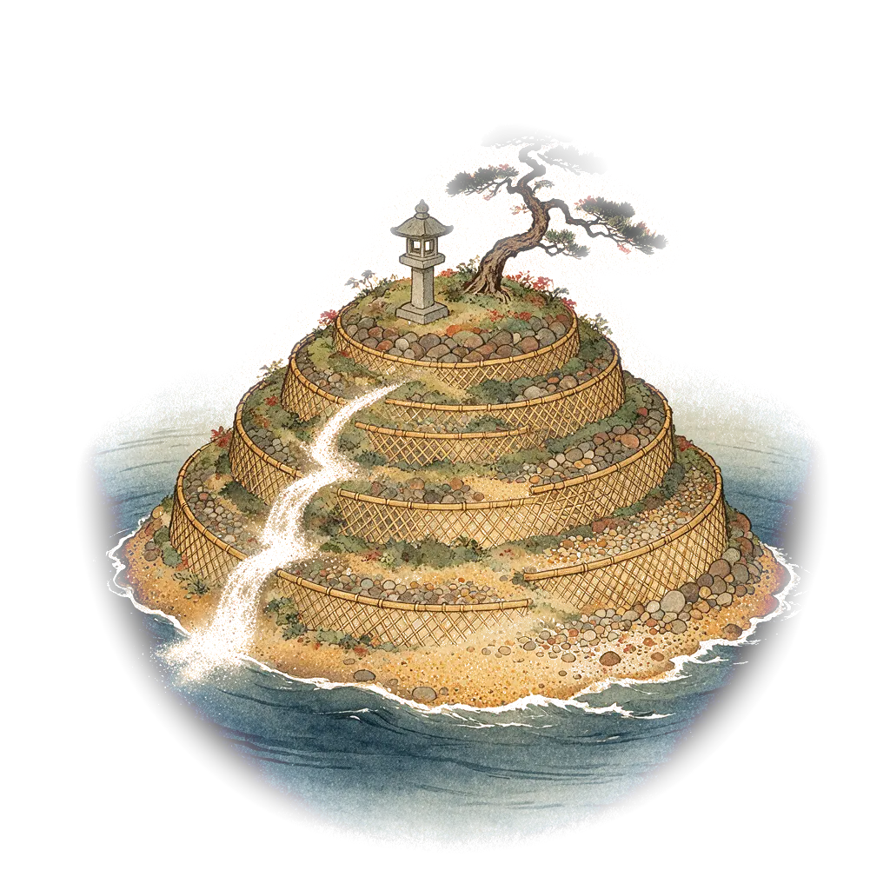
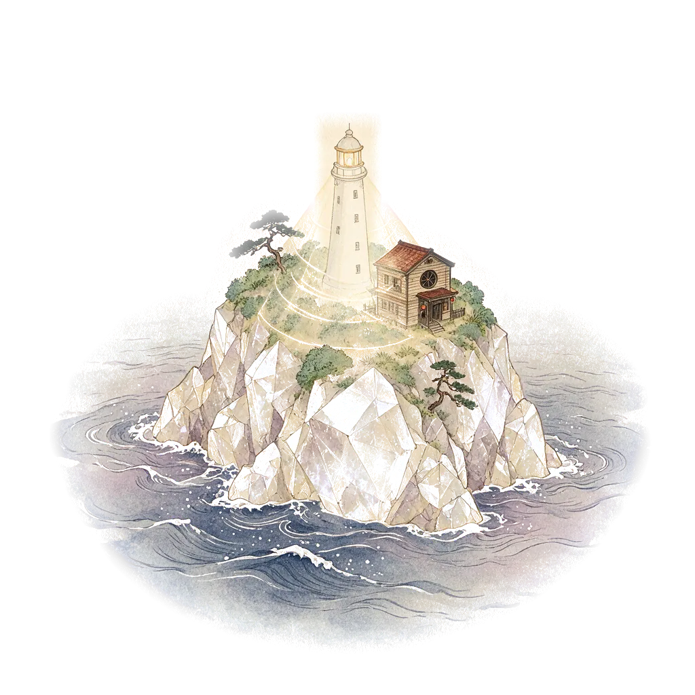
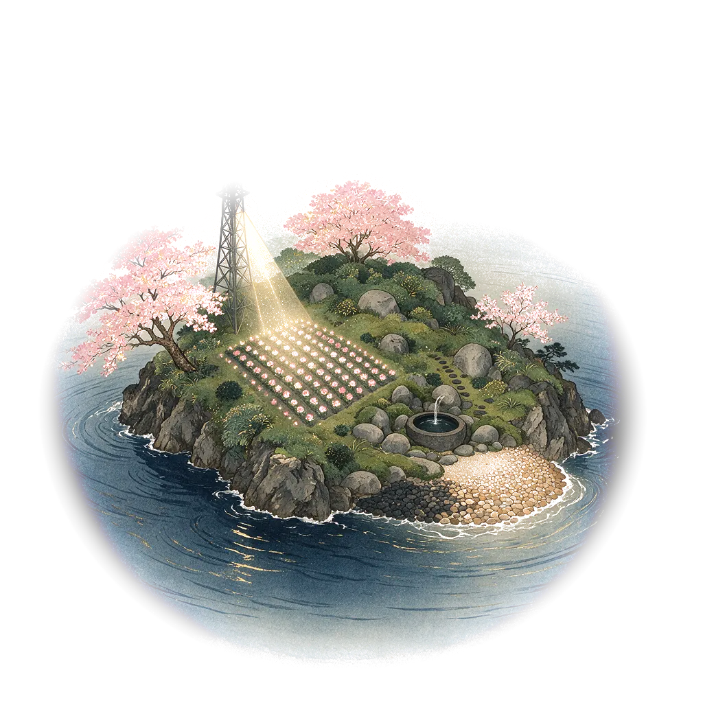
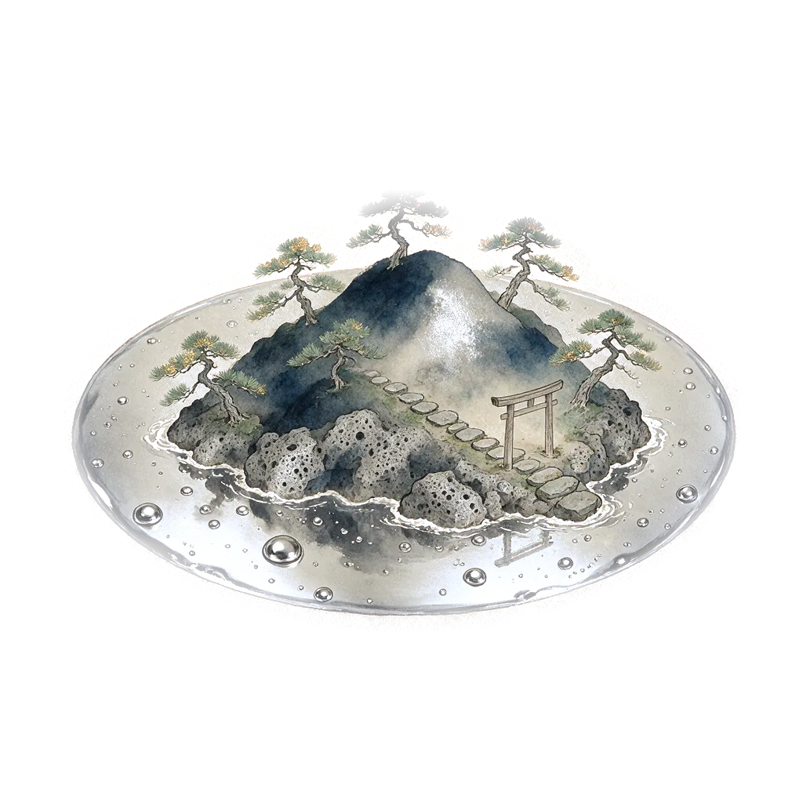
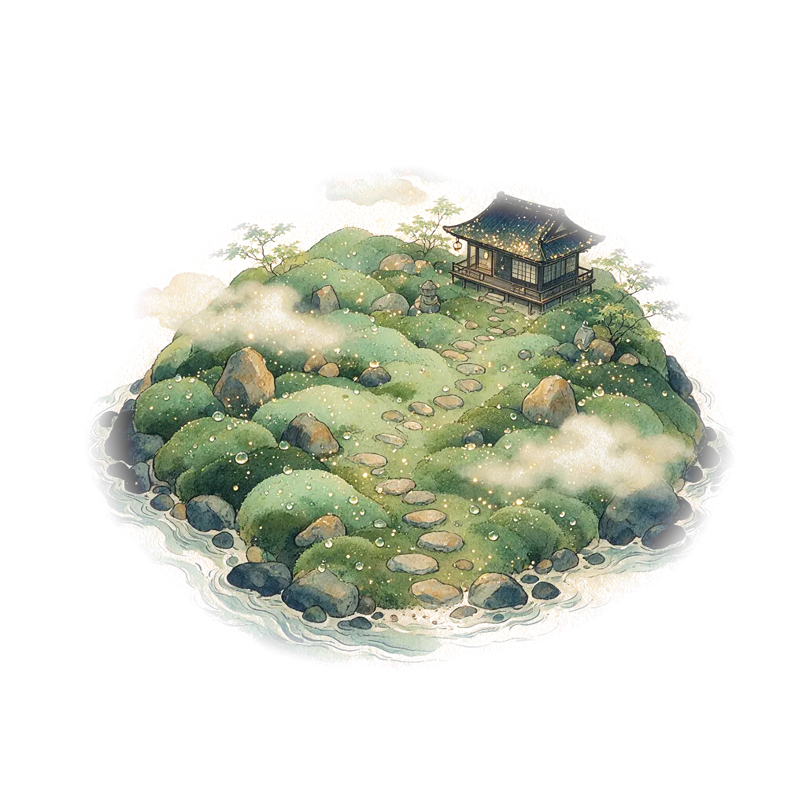
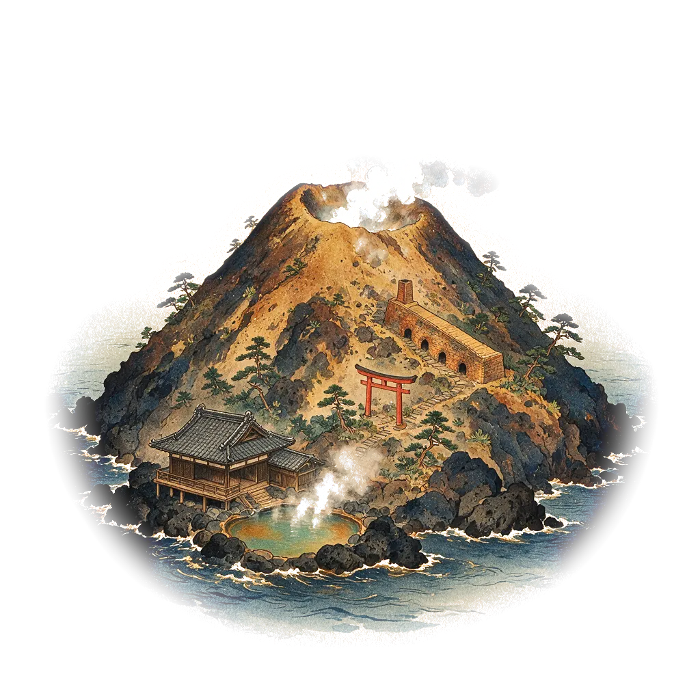

霧之群島 Materia Archipelago
「材料物化性分析」CT5812701 的課程地圖。每座島是一個分析單元，點島就會搭上渡船「微光丸」出航，經過一段島嶼特寫與霧教授的介紹後，從介紹卡開新視窗進入該單元的遊戲。
The course map for CT5812701 Physical and Chemical Analysis on Materials. Each island is one unit. Tap an island to sail there on the ferry Bikō-maru; after a short close-up with Prof. Kiri's introduction, the island card opens that unit's game in a new window.
1. 開始1. Getting started
- 在初始畫面選擇語言：中文、中文/English 或 English。Pick a language on the title screen: Chinese, Chinese/English or English.
- 手機與平板建議先按「全螢幕」，並將裝置橫放。On phones and tablets, press Fullscreen first and hold the device in landscape.
- 按「乗船 Board」上船。第一次會播放約 20 秒的開場，可按右上角 Skip 跳過；之後再來會直接進入地圖。Press Board. The first visit plays a 20-second opening (Skip at the top right); later visits go straight to the map.
2. 操作2. Controls
| 動作Action | 電腦Computer | 手機／平板Phone / tablet |
|---|---|---|
| 移動視角Look around | 拖曳Drag | 單指拖曳One-finger drag |
| 縮放Zoom | 滑鼠滾輪Mouse wheel | 雙指縮放Pinch |
| 出航到某座島Sail to an island | 點島或島名標籤Click the island or its label | 點島或島名標籤Tap the island or its label |
| 跳過動畫Skip a cutscene | Space Enter Esc · Skip | Skip |
| 關閉面板／介紹卡Close a panel or card | Esc | 點面板外側Tap outside the panel |
| 今日の一言Word of the day | 點右下角「霧教授」Press "Prof. Kiri" at the bottom right | |
| 小彩蛋Easter egg | 點一下船首的小汞Tap Merc on the bow of the ferry | |
3. 群島3. The islands
已開放的島點燈並以金色航路相連；霧中的島只會播放短暫預告，開放後霧教授會替你們驅霧。
Open islands have lit lanterns and gold sea lanes. Islands in the mist only play a short teaser until Prof. Kiri clears the mist.

PA · 粒徑大作戰：篩網轟炸客

XRD · 結晶密碼：布拉格偵探社

SEM · Micro Bloom 微光花園

期中考Midterm · 噗芙的星之碎片大冒險

MIP · 霧中in the mist

GA · 霧中in the mist

TA · 霧中in the mist
4. 出航與介紹卡4. Sailing and the island card
點島後，微光丸沿航路駛向該島（約 2 秒），接著是 10–12 秒的島嶼特寫：畫面上方是分鏡字幕，下方是霧教授的旁白與同學的提問。之後會落下一面暖簾，打開介紹卡：
After you tap an island the ferry sails there (about 2 s), then a 10–12 s close-up plays: shot captions at the top, Prof. Kiri's narration and a student's question at the bottom. A noren curtain then drops and opens the island card:
- 出航Set sail：以新視窗開啟該單元的遊戲。地圖會留在原本的分頁，玩完切回來即可。opens the unit's game in a new window. The map stays in its own tab, so you can switch back afterwards.
- 我已完成，蓋章I've cleared it · stamp：在御朱印帳蓋上這座島的印。stamps this island in your stamp book.
- 神社抽籤Draw omikuji（星屑港限定harbor only）：每天抽一支籤，籤上是一題 PA／XRD／SEM 複習題，答對得「大吉」，答錯得「末吉」並提示該回哪座島複習。draw one fortune a day: a PA, XRD or SEM review question. Answer right for "Great blessing"; a wrong answer earns "Future blessing" and tells you which island to revisit.
- 回地圖Back to map。
5. 設定5. Settings
| 項目Item | 選項（預設）Options (default) | 說明Notes |
|---|---|---|
| 語言Language | 中文 · 中文/English · English | |
| 背景音樂Music | 關閉Off · 開啟On | 由 8 個樂器音軌（琴、鋼琴、尺八、三味線、貝斯、弦樂鋪底、鐘琴、八音盒）加 1 個鼓組音軌即時合成，立體聲雙聲道；開場、地圖、各島與霧中各有不同編曲，隨場景交叉淡入。頂端的音符按鈕可快速開關。Synthesised live from 8 instrument tracks (koto, piano, shakuhachi, shamisen, bass, string pad, celesta, music box) plus 1 drum-kit track, in stereo. The opening, the map, each island and the mist each have their own arrangement, cross-faded as the scene changes. The note button at the top toggles it quickly. |
| 音效Sound FX | 關閉Off · 開啟On | 風鈴、拍子木、暖簾、蓋章、紙拉門等和風音效。Wind chimes, wooden clappers, the noren, the stamp, sliding doors and more. |
| 音量Volume | 主音量 · 音樂 · 音效Master · Music · FX | |
| 全螢幕Fullscreen | 關閉Off · 開啟On | 初始畫面也有全螢幕按鈕。iPhone 不支援網頁內全螢幕，會改開新分頁。There is also a Fullscreen button on the title screen. iPhone does not support in-page fullscreen, so the map opens in a new tab instead. |
| 繪圖Renderer | WebGPU 硬體(HW) · 軟體Software | WebGPU 以 GPU 著色器即時繪製青海波海面；裝置不支援時會自動改用軟體繪圖，設定欄會顯示目前狀態。WebGPU draws the seigaiha sea with a GPU shader. Devices without WebGPU fall back to software drawing automatically; the settings row shows which one is active. |
| 畫質Quality | 流暢Smooth 720p · 標準Standard 1080p · 高High 2K (2560) | 畫質越高越清晰，也越耗電。Higher quality is sharper and uses more power. |
| 劇情提示Story hints | 關閉Off · 開啟On | 關閉後不顯示霧教授的旁白與提示。Turn off to hide Prof. Kiri's narration and hints. |
設定頁也可「重播開場」與「清除御朱印」。所有設定與蓋章記錄都存在你自己的瀏覽器裡。
Settings also offers "Replay opening" and "Clear stamps". Settings and stamps are saved in your own browser.
6. 疑難排解6. Troubleshooting
- 沒有聲音：背景音樂預設為關閉，請在設定或頂端音符按鈕開啟；手機請確認未開靜音。No sound: music is off by default; turn it on in Settings or with the note button. On phones, check the silent switch.
- 畫面卡頓：把畫質改為「流暢」，或把繪圖改為「軟體」試試。Choppy: set Quality to Smooth, or try the Software renderer.
- 「出航」沒反應：請允許瀏覽器開啟彈出視窗。Set sail does nothing: allow pop-ups for this site.
- 看到「已遭修改」的畫面：此地圖只能從 AEML 發佈的原始網址使用。A "modified" lock screen means the map is not running from the original AEML release.